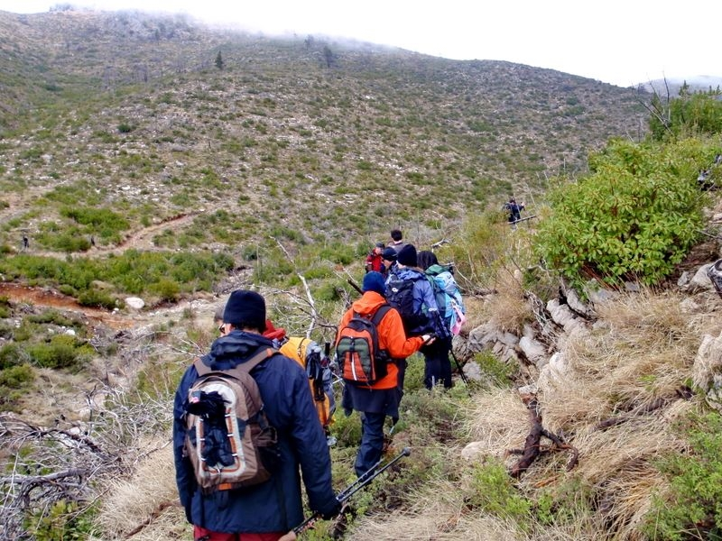
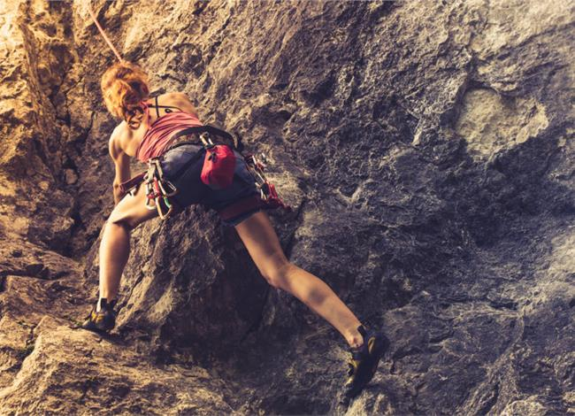

Ορειβασία-Αναρρίχηση
 Η ορειβασία είναι η δραστηριότητα - κίνηση στο περιβάλλον του βουνού, εντός η εκτός χαρτογραφημένων και σηματοδοτημένων μονοπατιών, με οποιεσδήποτε μετεωρολογικές συνθήκες.
Στην ορειβασία οι αντικειμενικοί κίνδυνοι (που προέρχονται από την φύση) καθώς και οι υποκειμενικοί (που προέρχονται από τα ανθρώπινα λάθη) είναι σχετικά συχνοί και όχι σπάνια οδηγούν σε σοβαρούς τραυματισμούς ή θανάτους. Μερικοί από τους αντικειμενικούς κινδύνους που αντιμετωπίζει ο περιπατητής - ορειβάτης είναι οι ξαφνικές αλλαγές του καιρού στο βουνού, το μαλακό ή παγωμένο χιόνι, οι χιονοστιβάδες, το δυνατό κρύο, η έκθεση στον ήλιο, οι πτώσεις βράχων. Η καταπόνηση του σώματος σε συνδυασμό με το περιβάλλον μπορεί να οδηγήσει σε αφυδάτωση, κρυοπαγήματα, ασθένεια του βουνού, απώλεια προσανατολισμού, απώλεια ψυχραιμίας, διαστρέμματα, κατάγματα, και άλλες δυσάρεστες καταστάσεις. Η δυσκολία μιας ορειβατικής διαδρομής εξαρτάται από την διάρκειά της, το ανάπτυγμά της, την υψομετρική διαφορά που καλύπτεται αλλά και τις τεχνικές δυσκολίες που περιέχει.
Μια τέτοια δραστηριότητα μπορεί να διαρκεί από μερικές ώρες έως αρκετές ημέρες, επομένως ο απαιτούμενος εξοπλισμός και τα απαραίτητα εφόδια ποικίλουν. Εκτός από τα απαραίτητα για πεζοπορία, η ορειβασία απαιτεί περισσότερο εξειδικευμένο εξοπλισμό, ειδικές μπότες, piolet, crampons, σχοινιά, καρφιά, κ.α. Στην σύγχρονη ορειβασία χρησιμοποιούνται ειδικά υλικά για τον ρουχισμό, ιδιαίτερα ανθεκτικά και με ιδιότητες που δίνουν μεγάλη αυτονομία και σιγουριά στον ορειβάτη.
Η δραστηριότητα απαιτεί καλή φυσική κατάσταση ώστε να ολοκληρώνεται στο συντομότερο δυνατό διάστημα, μειώνοντας έτσι την μακροχρόνια έκθεση του ορειβάτη στους κινδύνους του βουνού, ειδικά όταν οι συνθήκες είναι ακραίες. Ιδιαίτερα σημαντικό θεωρείται και η καλή προετοιμασία, ώστε να προβλεφθούν ακόμη και οι καταστάσεις που θέτουν την ζωή σε κίνδυνο, ώστε μια ορειβατική εξόρμηση να αφήσει αξέχαστες εμπειρίες και όχι τραύματα ή απώλεια ζωής.
Τα είδη της ορειβασίαςΗ ορειβασία περιλαμβάνει πολλές και διαφορετικές δραστηριότητες, όπως π.χ. ορεινή πεζοπορία, αναρρίχηση σε βράχια με ή χωρίς τη βοήθεια τεχνικών μέσων (καρφιά, σκοινί κλπ.), αλπινισμό (υψηλής δυσκολίας διαδρομή σε βουνά άνω των 2.000 μ.) και ορειβατικό σκι (με ειδικά πέδιλα εκτός των χιονοδρομικών κέντρων).
Η ορεινή πεζοπορία στα μονοπάτια ενός βουνού, χωρίς απαραιτήτως να στοχεύουμε στην κατάκτηση της πιο ψηλής κορυφής, είναι η πιο απλή και δημοφιλής μορφή ορειβασίας με την οποία ασχολούνται τα περισσότερα μέλη των ορειβατικών συλλόγων στη χώρα μας. Ορεινή πεζοπορία είναι η ανάβαση, η διάσχιση ή η κατάβαση στα μονοπάτια ενός βουνού, για την οποία δεν απαιτούνται εξειδικευμένες γνώσεις, σε αντιδιαστολή με τα άλλα είδη της ορειβασίας.
Η επαφή με τις αντίξοες συνθήκες που επικρατούν στο βουνό, ο αγώνας για να φτάσουμε στον προορισμό μας -είτε πρόκειται για το καταφύγιο όπου θα διανυκτερεύσουμε είτε για την κορυφή-, η αλληλεγγύη που αναπτύσσεται με τα μέλη της ομάδας, η άγρια ομορφιά του βουνού και η επαφή με τη φύση συνθέτουν το πραγματικό νόημα της ορειβασίας, εξηγούν οι έμπειροι ορειβάτες.
Ελεύθερη αναρρίχηση Η ελεύθερη αναρρίχηση είναι η προώθηση σε κάθετη ή κεκλιμένη σκληρή επιφάνεια με τη χρήση ειδικών τεχνικών και κινήσεων. Τα αναρριχητικά υλικά χρησιμοποιούνται μόνο για ασφάλεια και όχι για στήριξη. Διακρίνεται στην «ασφαλισμένη» αναρρίχηση (με κανόνες και πρακτικές κίνησης και ασφάλισης και με τη χρήση σχοινιού) και στο μπούλντερινγκ, την αναρρίχηση δηλαδή σε χαμηλά βράχια ή κλειστές πίστες, χωρίς τη χρήση σκοινιού με μόνη, ενδεχομένως, εξασφάλιση από την χρήση ειδικών στρωμάτων. Υπάρχει επίσης και η ελεύθερη μοναχική αναρρίχηση, που λαμβάνει χώρα χωρίς τη λήψη μέτρων ασφαλείας.
Ορισμένες μορφές αναρρίχησης είναι:
- Αναρρίχηση σε βράχο: Είναι η αναρρίχηση που διεξάγεται σε ένα ορεινό περιβάλλον, σε ορθοπλαγιές ή κόψεις, («βουνίσια αναρρίχηση») ή η αναρρίχηση σε πεδινό βράχο, συνήθως με την μορφή της «σπόρ» αναρρίχησης, σε «πίστες», δηλαδή σε προκαθορισμένες και συχνά προασφαλισμένες διαδρομές ή και σε νέες διαδρομές, με σκοπό την διάνοιξή τους (την «ελευθέρωση» τους) ή την "επανάληψή" τους.
- Η ορεινή αναρρίχηση γίνεται συνήθως με τη βοήθεια ειδικών ασφαλειων (Π.χ. καρφιά) που τοποθετούνται από τους επικεφαλής από τους αναρριχώμενους και αφαιρούνται από τον τελευταίο της σχοινοσυντροφιάς (παραδοσιακή ή "trad" αναρρίχηση). Μπορεί να είναι μονοήμερη ή πολυήμερη και να περιλαμβάνει και μπιβουάκ, κατασκήνωση δηλαδή στον βράχο.
- Αναρρίχηση σε πάγο: Διεξάγεται σε παγωμένες επιφάνειες, σε ορεινό περιβάλλον (αλλά πρόσφατα και σε ειδικά κλειστά γυμναστήρια με τεχνητό πάγο). Γίνεται χρήση ειδικού εξοπλισμού, ειδικών αναρριχητικών πιολέ πάγου, κραμπόν, χρήση παγόβιδας κ.α
- Αναρρίχηση σε πίστα: Διεξάγεται σε κλειστούς χώρους πάνω σε τεχνητές επιφάνειες με τεχνητά στηρίγματα με τους ίδιους περίπου κανόνες που διεξάγεται και η αναρρίχηση σε βράχο.
- H αναρρίχηση top rope ή αναρρίχηση με σκοινί «από πάνω» σε βράχο, με την ασφάλιση δηλαδή του σχοινιού από το «ρελέ» (γαλ. relais, αγγλ. anchor) τον ειδικό κρίκο ή μηχανισμό που βρίσκεται στο τέλος μιας διαδρομής ή ενός τμήματός της και χρησιμεύει στην ασφάλιση ενός τμήματος της αναρρίχησης ή στην ασφάλιση μιας καταρρίχησης